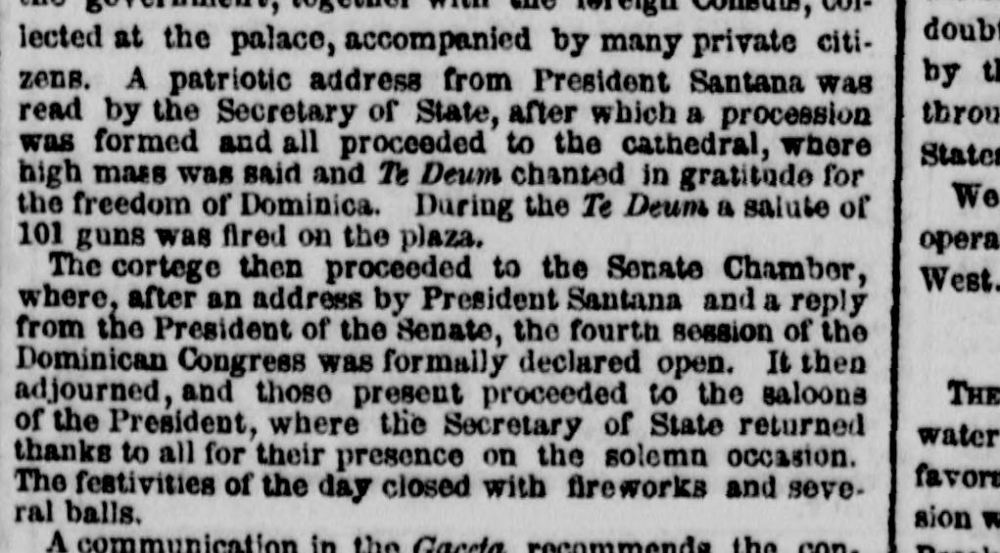
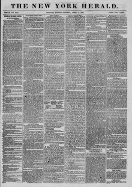

Where, after an address by President Santana and a replyDonde, después de un discurso del presidente Santana y una respuesta
The New York Herald. New York [N.Y.], April 4, 1859. Page 1. View the originalVer el original


See the full pageVer la página completaThe New York Herald reported on the formal opening of the fourth session of the Dominican Congress following addresses by President Santana and the Senate President, with festivities concluding in fireworks and balls. A communication in the Gaceta recommended building a turnpike between Santiago and Puerto Plata instead of a railroad due to the country's exhausted means, while suggesting improvements to the Yuna river and Samana bay, including establishing a central station for British West India mail steamers at Angalina. Additionally, Don Juan N. Riveiri was recognized as Consul for the Republic of New Granada, and the government committee established the official value of the paper currency for the ensuing month at the rate of 3.50 on March 1st.The New York Herald informó sobre la apertura solemne de la cuarta legislatura del Congreso dominicano tras los discursos del presidente Santana y del presidente del Senado, cuyas festividades concluyeron con fuegos artificiales y bailes. Un comunicado en la Gaceta recomendó construir una carretera de peaje entre Santiago y Puerto Plata en lugar de un ferrocarril debido a los agotados recursos del país, a la vez que sugirió mejoras en el río Yuna y la bahía de Samaná, incluido el establecimiento en Angalina de una estación central para los vapores correos británicos de las Indias Occidentales. Además, don Juan N. Riveiri fue reconocido como cónsul de la República de la Nueva Granada, y la comisión gubernamental fijó el 1 de marzo el valor oficial del papel moneda para el mes siguiente a una tasa de 3,50.
FULL TEXT:TEXTO COMPLETO:
the government, together with the foreign Consuls, collected at the palace, accompanied by many private citizens. A patriotic address from President Santana was read by the Secretary of State, after which a procession was formed and all proceeded to the cathedral, where high mass was said and Te Deum chanted in gratitude for the freedom of Dominica. During the Te Deum a salute of 101 guns was fired on the plaza.el gobierno, junto con los Cónsules extranjeros, reunidos en el palacio, acompañados por muchos ciudadanos privados. Una dirección patriótica del Presidente Santana fue leída por el Secretario de Estado, después de lo cual se formó una procesión y todos procedieron a la catedral, donde se dijo misa mayor y se cantó Te Deum en gratitud por la libertad de Dominica. Durante el Te Deum se disparó una salva de 101 cañonazos en la plaza.
The cortege then proceeded to the Senate Chamber, where, after an address by President Santana and a reply from the President of the Senate, the fourth session of the Dominican Congress was formally declared open. It then adjourned, and those present proceeded to the saloons of the President, where the Secretary of State returned thanks to all for their presence on the solemn occasion. The festivities of the day closed with fireworks and several balls.El cortejo entonces procedió a la Cámara del Senado, donde, después de un discurso del Presidente Santana y una respuesta del Presidente del Senado, la cuarta sesión del Congreso Dominicano fue formalmente declarada abierta. Luego se levantó, y los presentes procedieron a los salones del Presidente, donde el Secretario de Estado dio gracias a todos por su presencia en la solemne ocasión. Las festividades del día cerraron con fuegos artificiales y varios bailes.
A communication in the Gaceta recommends the con-Una comunicación en la Gaceta recomienda la con-